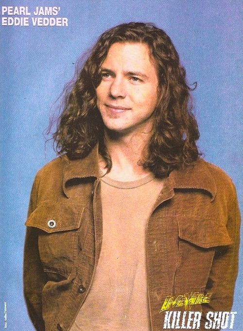
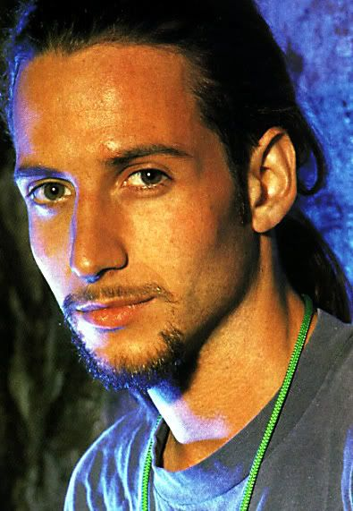
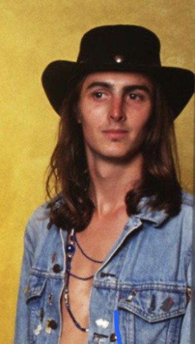
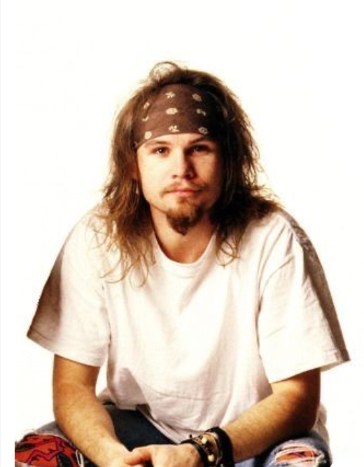

Pearl Jam is a legendary American rock band that formed in Seattle in 1990. Known for their raw sound, powerful lyrics, and unique blend of rock, grunge, and alternative music. Pearl Jam became one of the most influential bands of the 1990s and beyond. You can visit the official Pearl Jam page on Official Pearl Jam
The band's lineup consists of:
Eddie Vedder (lead vocals, rhythm guitar)
Stone Gossard(rhythm guitar)
Mike McCready(lead guitar)
Jeff Ament(bass guitar)
Matt Cameron (drums)




Over the years, Pearl Jam has captivated millions of fans worldwide with their thought-provoking music, impassioned performances, and commitment to social and political causes. Their debut album Ten catapulted them into the global spotlight, and they've maintained a powerful presence in the rock world ever since. Pearl Jam is widely regarded for their musical integrity, and their dynamic blend of grunge, punk, and hard rock has solidified them as one of the most enduring and influential bands of all time.
Eddie Vedder "Our fans are like a family to us. They've been with us through the highs and lows, and we couldn't have done it without them."